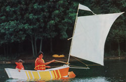
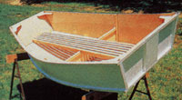
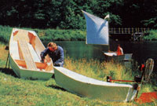
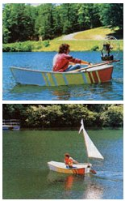

Buy two 4 x 8 sheets of 1/4" plywood, and you can start this rewarding winter workship project.
There aren't too many homesites in North America that aren't within easy driving distance of a good-sized body of water, So it's a safe bet that those of you who don't own a boat had, over the past summer, occasion to wish you did. And there are several reasons why right now would be a good time to begin a boat-building project.
For one, the winter months ahead will provide some freedom form the constant demands of yard and garden work ( and from the tempetation to simply be outdoor in fine weather) and thus should allow plenty of time for the slow-and-steady woodworkers among us to have our hand-built watercraft ready for launch next spring. In addition, if you decide to buckle down and get right to this project, you'll be able to have a special Christmas gift ready to give a watersmitten youngster . . . or a fine little fowling boat for your own winter duck hunts.
You shouldn't find MOTHER's dinghy too difficult to construct. Research staffers Dennis Burkholder and Clarence Goosen built the brightly painted beauty shown here in just four days . . . and most of that time was spent waiting for glue to dry!
Your first task will be to collect two 4' X 8' sheets of 1/4" marine plywood (we used a less expensive plywood when building the two prototypes used to refine our design, and those boats have held up well so far, but we can't make any estimate of their long-term reliability), about 160 feet of 3/4" X 1-1/8" flexible, clear-grained hardwood (we recommend oak, and ripped our strips from ten-foot 3/4" X 8" boards), a foot or so of 3/4" X 8" hardwood for the motor-mount brace (you'll measure it for exact fit later), about 500 No. 6 X 3/4" brass wood screws, two dozen No. 8 X 1-1/2" brass wood screws (nickle-plated fasteners can also be used), and a supply of plastic resin glue.
To begin, scribe a centerline down each sheet of plywood (it'll serve as a reference point for several of the measurements to come). Then go on to mark the cutting lines for one of the boat's sides. To do so, select a long, straight-grained strip of 1-1/8" X 3/4" hardwood to use as a straightedge. (Keep this strip separate, because the same one should be used to draw the curves for the boat's bottom later.) Clamp its center to one of your plywood sheets, placing the clamp about 1/8" in from the edge at a point 3' 6-1/2" from one end (that end will be the boat's stern). Then, with a friend's help, bend the hardwood into a bow, clamping it so that its outer edges intersect the edges of the plywood 3" from the corner in the stern and 5-1/8" from the corner in the bow. With that done, scribe a line along the outer surface of the hardwood strip.
Next, you'll want to draw the upper edge of the boat's side. To do so, mark the clamp positions as in the accompanying illustration, then-using a bar clamp positioned 3' 6-1/2" from the stern end-secure the hardwood strip with its outer edge 1'3-1/4" from the edge of the plywood, clamp the ends of the strip as marked, and trace the line. Now mark the angles of the bow and stern as shown, cut out the side, and flop it over to use as a pattern for the boat's other side. (It's best to draw in the patterns for the bow and stern transoms, allowing room for the four corner pieces, before doing any more cutting, to make sure all of the components will fit on the one plywood sheet.)
Now, going to the other plywood sheet, use your hardwood strip "ruler" to draw the boat's bottom, employing the same bend-and trace technique used when drawing the sides. Then cut the bottom out, leaving a surplus of 1-1/2" to 2" around the pattern on the sides and at the bow (it'll be trimmed away later).
With that done, you can cut out the second side and the transoms and also draw and cut out the central support frame. Then glue and screw the hardwood support strips, and the cut-to-fit motor-mount brace, to the front and rear transoms and the central support, using No. 6 X 3/4" wood screws set at 3" intervals. (The upper support strips for the front and rear transoms will have to be trimmed to match the angles of the bow and stern. To do so, simply use a sliding bevel to measure the appropriate angle on the bottom panel-use the pattern lines, not the "hem"-then set your saw's miter gauge to that angle and trim away.)
In the next step, use glue and 3"-spaced No. 6 X 3/4" wood screws to secure the two sides to the central support frame, which should be positioned 3' 6-1/2" from the boat's stern. Then swing in the sides and, starting with the stern transom (you might want to loop a rope around the two sides at a point near the front to keep them from spreading too much while you do this), glue and screw the sides to the stern transom support frame-again setting the screws at 3" intervals. Now go on to secure the sides to the bow transom in the same manner, and let the glue dry for its full recommended period of time.
At this point, we come to the only really awkward part of the construction process. After the glue has dried, you'll have to beg, borrow, or buy at least 20 clamps to secure the hardwood support strips to the bottom edges of the two sides. Cut the strips to length, leaving a 6" overhang on each end, and then start each one-at the stern-by running a No. 8 X 1-1/2" wood screw through it and into the transom support frame. Then-working with a helper and using glue and 3/4" wood screws set at 3" intervals-bend, fasten, and clamp both strips in place a bit at a time. (A brace and bit, and predrilled pilot holes, will make this task go quickly.) Secure the far ends of each strip with 1-1/2" screws, and when the adhesive has thoroughly dried, trim the ends of the strips and plane them flush with the bottom of the plywood.
When the next step's completed, your boat will begin to look like a water-worthy craft. Now's the time to invert the sides-and-transoms assembly and to glue and screw the bottom in place. Once that's done, you can go on to install the bottom support strips, using the overlapping bottom "hem" to clamp them in place as you glue and screw them down (these 3/4" screws are inserted from the inside of the boat).
Later, after waiting for the previously added pieces to dry in place, you can trim off the excess plywood on the bottom, flip the boat over, and attach the gunwales (top support strips) to the upper edge of each side, employing the multiple clamps to attach the two gunwales simultaneously as you did when installing the lower side support strips.
And, finally, it's time for the finishing touches. Take your scrap of plywood, and using the sliding bevel to get the angles right, draw and cut out the four corner braces. Secure strips of hardwood brace to these at the points at which they'll be fastened to the boat. Bring the sliding bevel into play again, this time to measure the slope of the boat's sides and transoms at the appropriate points, then set your miter gauge to the indicated angle and rip the support strips before gluing and screwing them into place.
You'll have to use the sliding bevel once more to fit the bow seat support in place; then run a strip of hardwood from it, allowing the strip to rest on the central support brace, to mark the correct height for the stern seat support. With that done, go on to assemble the hardwood-strip seat as shown in the detail drawing, leaving off one of the side braces so you'll be able to paint the interior of the boat and slip some polystyrene flotation blocks beneath the seat. (Simply attach the remaining side brace to hold the foam in position,)
We used three coats of urethane floor enamel (about one gallon total) to paint our skiff: However, a primer coat of Thompson's Water Seal (or a similar product) would certainly be a worthwhile investment, especially if you elect to experiment with a less expensive grade of plywood.
Once the paint has dried and you've positioned your oarlocks (we've found them to work best when the holes are centered 7-1/4" behind the center support brace), grab a pair of oars and a life preserver, head for the nearest lake, pond, bay, or slow-moving river, and discover, as Water Rat noted in The Wind in the Willows, that "there is nothing-abso lutely nothing-half so much worth doing as simply messing about in boats."
If you'd like a bit more help with your boatbuilding project than we've been able to present in these three pages, you'll be pleased to know that we're preparing a set of detailed plans for both the boat and the sail unit that will be featured in our next issue. You can order a set, for $10.00 plus $1.00 shipping and handling, by writing to Boat Plans, THE Mother Earth News PLANS, P.O. Box 70, Hendersonville, NC 28793.
COMING UP:
MOTHER's researchers are fine- tuning the simple clamp-on sail rig shown in the accompanying photos. This little breeze-fueled power plant-which can be used with any small, square-sterned craft, and which shouldn't cost more than $45 to assemble-will be described in detail in MOTHER NO. 96.
|
 Allow it to perform well with a simple homemade sail rig |
 The clean lines of MOTHER's little dinghy |
 Here are the various prototypes built while perfecting the design. |
|
 Our row-and-sail boat also accommodates a 1.5HP Cruise Air from Air Drive Systems of Tavernier, Florida (We'll have more on the power plant in a future issue.) |
|
|